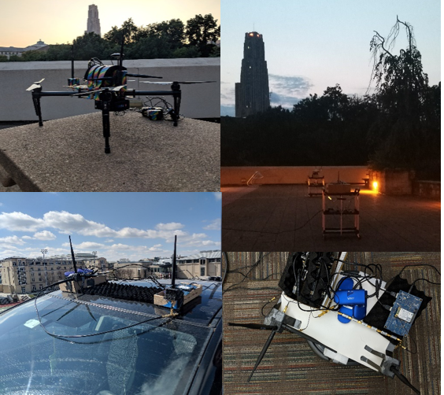

Project: Wireless Sensing

This project aims to re-use existing wireless communication radios as sensors. We develop solutions to use Wi-Fi radios as material scanners that can quickly scan the environment for the presence of humans, even if they are hidden (e.g. under rubble). We also developed novel gesture based interfaces that transform ordinary surfaces, such as our clothes, into shape-aware objects that can detect our gestures and postures. The WiTech lab has developed rich literature advancing state-of-the-art wireless localization, to track objects at sub-meter accuracy indoors, where GPS does not operate.
Video Highlight
Publications
- Pneumatically-Actuated Liquid Metal-Based Frequency Reconfigurable Antenna, Yiwen Song, Aditya Bharambe, Dinesh K Patel, Barbara Zhuo, Mason Zadan, Carmel Majidi and Swarun Kumar, Advanced Science 2026 [PAPER] [WEBSITE]
- SonicSieve: Bringing Directional Speech Extraction to Smartphones Using Acoustic Microstructures, Kuang Yuan, Yifeng Wang, Xiyuxing Zhang, Chengyi Shen, Swarun Kumar, and Justin Chan, CHI 2026 [WEBSITE]
- GigaFlex: Contactless Monitoring of Muscle Vibrations During Exercise with a Chaos-Inspired Radar, Jiangyifei Zhu, Yuzhe Wang, Tao Qiang, Vu Phan, Zhixiong Li, Evy Meinders, Eni Halilaj, Justin Chan and Swarun Kumar, SenSys 2026 [WEBSITE]
- Surface Material and Roughness Sensing using mmWave via Surface Scattering and Ambient Vibrations, Yawen Liu, Bert Shan and Swarun Kumar, SenSys 2026 [WEBSITE]
- Towards Smart Wireless Power Transfer Through a Localizing and Beam-Focusing Magnetic Metasurface, Yawen Liu and Swarun Kumar, HotMobile 2026 [WEBSITE]
- RFBridge: Ultra Wideband Reconfigurable Metamaterial Surface Enabling Frequency Conversion, Yawen Liu, Shivang Aggarwal, Mohamed Ibrahim, Puneet Sharma, and Swarun Kumar, HotMobile 2025 [PAPER] [WEBSITE]
- Can we make FCC Experts out of LLMs?, Atul Bansal, Veronica Muriga, Jason Li, Lucy Duan and Swarun Kumar, HotMobile 2025 [PAPER] [WEBSITE]
- WindDancer: Understanding Acoustic Sensing under Ambient Airflow, Kuang Yuan, Dong Li, Hao Zhou, Zhehao Li, Lili Qiu, Swarun Kumar and Jie Xiong, IMWUT 2025 [PAPER] [WEBSITE]
- DeWinder: Single-Channel Wind Noise Reduction using Ultrasound Sensing, Kuang Yuan, Shuo Han, Swarun Kumar and Bhiksha Raj, InterSpeech 2024 [PAPER] [WEBSITE]
- Shape-programming Robotic Reflectors for Wireless Networks, Yawen Liu, Akarsh Prabhakara, Jiangyifei Zhu, Shenyi Qiao, Swarun Kumar, ICRA 2025 [PAPER] [WEBSITE]
- Frequency-selective actuation of liquid crystalline elastomer actuators with radio-frequency, Yiwen Song, Zefang Li, Mason Zadan, Jingxian Wang, Swarun Kumar, Carmel Majidi, Nature Communications 2025 [PAPER] [WEBSITE]
- Thermo-Mechanically Stable, Liquid Metal Embedded Soft Materials for High-Temperature Applications, Robert Herbert, Piotr Mocny, Yuqi Zhao, Ting-Chih Lin, Junbo Zhang, Michael Vinciguerra, Sunny Surprenant, Wui Yarn Daphne Chan, Swarun Kumar, Michael R. Bockstaller, Krzysztof Matyjaszewski, Carmel Majidi, Advanced Functional Materials 2024 [PAPER] [WEBSITE]
- Hydra: Exploiting Multi-Bounce Scattering for Beyond-Field-of-View mmWave Radar, Nishant Mehrotra, Divyanshu Pandey, Ashutosh Sabharwal, Akarsh Prabhakara, Yawen Liu and Swarun Kumar, MobiCom 2024 [PAPER] [WEBSITE]
- Guiding Energy Distribution inside Microwave Oven, Yiwen Song, Swarun Kumar, Hao Pan, Longyuan Ge, Yi-Chao Chen, and Lili Qiu, MobiCom 2024 [PAPER] [WEBSITE]
- ToMoBrush: Exploring Dental Health Sensing using a Sonic Toothbrush, Kuang Yuan, Mohamed Ibrahim, Yiwen Song, Guoxiang Deng, Robert A. Nerone, Suvendra Vijayan, Akshay Gadre, and Swarun Kumar, UbiComp 2024 [PAPER] [WEBSITE]
- Wireless Actuation for Soft Electronics-free Robots, Jingxian Wang, Yiwen Song, Mason Zadan, Yuyi Shen, Vanessa Chen, Carmel Majidi and Swarun Kumar, MobiCom 2023 [PAPER] [WEBSITE]
- Navigating Soft Robots through Wireless Heating, Yiwen Song, Mason Zadan, Kushaan Misra, Zefang Li, Jingxian Wang, Carmel Majidi and Swarun Kumar, ICRA 2023 [PAPER] [WEBSITE]
- Software Defined Cooking using a Microwave Oven , Haojian Jin, Jingxian Wang, Swarun Kumar and Jason Hong, MobiCom 2019 (ACM GetMobile Research Hightlight) [PAPER] [SLIDES] [WEBSITE]
- On the Feasibility of Wi-Fi Based Material Sensing , Diana Zhang, Jingxian Wang, Junsu Jang, Junbo Zhang, Swarun Kumar, MobiCom 2019 [PAPER] [SLIDES] [WEBSITE]
- Decimeter-Level Localization with a Single WiFi , Access Point, Deepak Vasisht, Swarun Kumar and Dina Katabi, NSDI 2016 [PAPER]
- Accurate Indoor Localization with Zero Startup Cost, Swarun Kumar, Stephanie Gil, Dina Katabi and Daniela Rus, ACM MOBICOM 2014 (Best Presentation Runner-up) [PAPER] [WEBSITE]
- LTE Radio Analytics Made Easy and Accessible, Ezzeldin Hamed, Dina Katabi, and Li Erran Li, ACM SIGCOMM 2014 [PAPER] [WEBSITE]
Project Participants
- PI: Swarun Kumar
- Students: Diana Zhang, Haojian Jin and Junbo Zhang
- Collaborators: Prof. Stephanie Gil and Prof. Dina Katabi